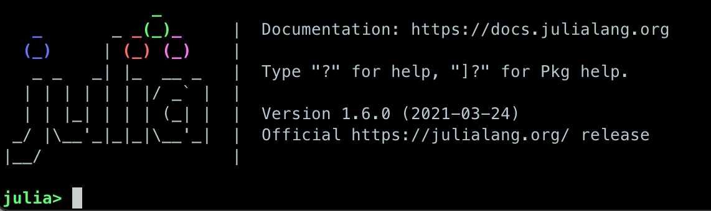
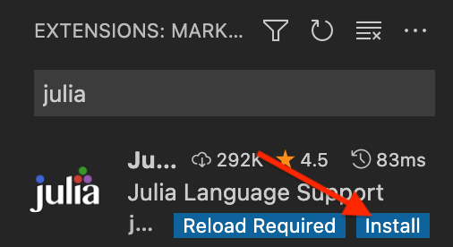
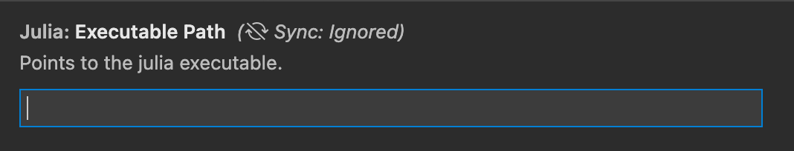

Setup¶
Please follow the instructions on this page to install both Julia and VS Code with the Julia plugin on your machine.
Installing Julia¶
There are two ways to install Julia:
Downloading an installer for your operating system for the latest stable Julia version.
Using Juliaup, the Julia version manager.
Option 2 is the recommended installation method on Windows, MacOS and Linux. The benefit of juliaup is that it allows users to install specific Julia versions, it alerts users when new Julia versions are released and it provides a convenient Julia release channel abstraction. Both installation methods are nonetheless documented here.
1. Using the Julia installer¶
First download the latest stable release of Julia for your operating system from the julialang.org website.

Follow the instructions to complete the installation.
Platform-specific instructions can be found here. It is convenient to be able to run Julia from the command line, so follow the instructions to add Julia to $PATH. For Windows users who do not already have a terminal installed, we recommend to install the Windows Terminal from the Microsoft Store.
2. Using Juliaup¶
Full instructions can be found at https://github.com/JuliaLang/juliaup.
In short:
On Windows you can install Julia and Juliaup either through the Windows store or on a command line by executing
winget install julia -s msstore.On MacOS or Linux, type
curl -fsSL https://install.julialang.org | shon a command line and follow the instructions.
3. Checking your installation¶
Regardless of how you installed Julia, please ensure that you can open the Julia
REPL by typing julia on the command line in a terminal, or by clicking the
Julia icon on your Desktop or Applications folder. You should see something like
in the image below (disregard the version number).

Type versioninfo() to get detailed information about the installed Julia runtime.
To exit the REPL again, hit CTRL-d or type exit().
Development environment¶
In principle, you only need your preferred text editor and the REPL to start writing Julia. However, your experience might be better using a fully fledged IDE like Visual studio Code or Zed; both have extensions for Julia. With some more preliminary effort you can also use Neovim with some LSP plugins. In the following, we provide specific instructions for VS Code.
First install VSCode according to the official documentation.
Installing the VSCode Julia extension¶
After starting VSCode, click the Extensions button on the left-side menu, type Julia and
click Install` to install the Julia extension.

{kind=link}

You now need to configure the Julia extension and set the path to the Julia executable.
Click the cogwheel button next to the Julia extension:

Then find the Julia: Executable Path field:
{kind=link}

In this field enter the path to the Julia executable that you have installed.
If you are curious, scroll through the other possible configuration settings!
(Optional) Installing JupyterLab and a Julia kernel¶
JupyterLab can most easily be installed through the Miniconda Python distribution. If you already have a working Jupyter installation feel free to skip to the next subsection.
To install Miniconda, visit https://docs.conda.io/en/latest/miniconda.html,
download an installer for your operating system and follow the instructions.
After activating a conda environment in your terminal, you can install
JupyterLab with the command conda install jupyterlab.
Add Julia to JupyterLab¶
To be able to use a Julia kernel in a Jupyter notebook you need to
install the IJulia Julia package. Open the Julia REPL and type:
using Pkg
Pkg.add("IJulia")
Create a Julia notebook¶
Now you should be able to open up a JupyterLab session by typing
jupyter-lab in a terminal, and create a Julia notebook by clicking
on Julia in the JupyterLab Launcher or by selecting File > New > Notebook
and selecting a Julia kernel in the drop-down menu that appears.
Running Julia jobs on LUMI¶
Running Julia batch jobs¶
In order to run Julia batch jobs on LUMI, we use the following directory structure and assume it is in your working directory.
.
├── script.jl # Julia script
└── batch.sh # Slurm batch script
An example of the batch.sh script is shown below.
#!/bin/bash -l
#SBATCH --account=project_465001310
#SBATCH --partition=small
#SBATCH --time=00:10:00
#SBATCH --nodes=1
#SBATCH --ntasks-per-node=1
#SBATCH --cpus-per-task=1
#SBATCH --mem-per-cpu=1000
module use /appl/local/csc/modulefiles
module load julia
julia script.jl
An example of the script.jl code is provided below.
println("Hello, Julia")
println(2+3)
println(big(10)^19)
println("----EOF----")
Run the command sbatch batch.sh to submit your jobs at the right directory.
Running Julia interactive jobs¶
Interactive jobs allow a user to interact with applications on compute nodes. With an interactive job, you request time and resources to work on a compute node directly, which is different to a batch job where you submit your job to a queue for later execution.
You can either use salloc + srun or just use srun to create an interactive session. The two options are similar to sbatch.
Using salloc + srun
Using salloc, you allocate resources and spawn a shell used to execute the computing task.
$ salloc -A project_465001310 -N 1 -t 0:10:00 -p standard-g
Once the allocation is made, this command will start a shell on the login node. You can start your computation on the allocated node(s) with srun.
$ module use /appl/local/csc/modulefiles
$ module load julia
$ srun --ntasks-per-core=1 julia script.jl
Using srun
For simple interactive session, you can use srun with no prior allocation. In this scenario, srun will first create a resource allocation in which to run the job. For example, to allocate 1 node for 10 minutes and spawn a shell to run your computational task.
$ module use /appl/local/csc/modulefiles
$ module load julia
$ srun --account=project_465001310 --partition=standard-g --nodes=1 --cpus-per-task=1 --ntasks-per-node=1 --time=0:10:00 --pty julia script.jl